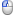
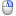

Controls
Controls
Navigation
-
←
previous frame
-
↑
previous frame
-
previous frame
-
→
next frame
-
↓
next frame
-
next frame
Annotating
-
DEL
exclude frame
-
C
copy or replace annotations from previous frame
-
R
revert annotations from last save
-
 Z
Z
-
W
mark frame as cropped on top
-
A
mark frame as cropped on left
-
S
mark frame as cropped on bottom
-
D
mark frame as cropped on right
Initial
-

mark the current feature
-

skip the current feature
Revision
-
mark the nearest feature
-
remove the nearest feature
Modifying
-
move all features
-
[
rotate all features counter-clockwise
-
]
rotate all features clockwise
-
+
scale all features up
-
−
scale all features down
-
←
move all features left
-
↑
move all features up
-
→
move all features right
-
↓
move all features down